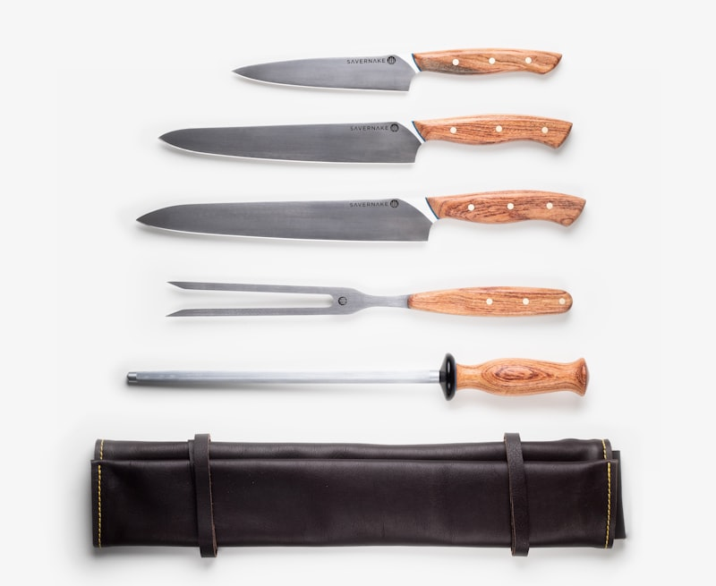
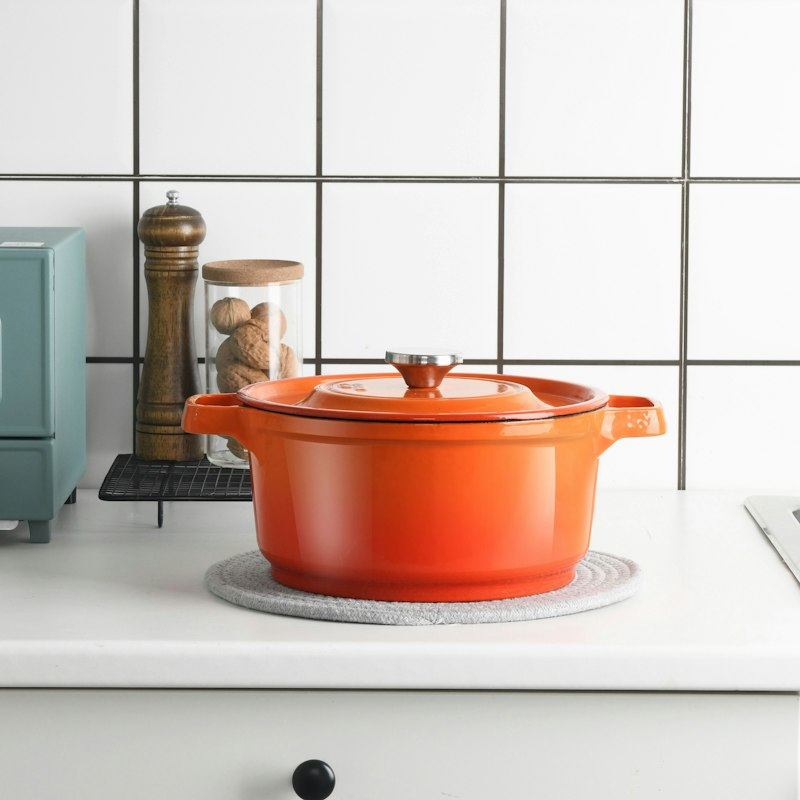

Precision Begins Before the First Cut.
Great cooking is an accumulation of micro-decisions: the temperature of a pan, the grain direction of a protein, and the thickness of a vegetable dice. The instrument in your hand should never compromise that clarity.

The Geometry Behind the "Ghost Cut"
A knife that is merely sharp will still wedge in a carrot. True cutting freedom requires three coordinated structural dimensions:
1. The Distal Taper
The spine gradually thins from 2.5mm over the heel down to a needle-fine 0.5mm near the tip, allowing the heel to handle heavy chopping while the tip glides through onions.
2. The Hamaguri (Convex) Bevel
Instead of a flat V-grind, the blade face features a gentle clamshell curve that introduces air pockets between the sliced food and the steel, stopping starchy adhesion.
3. Rounded & Polished Spine / Choil
The corners where your finger rests in a professional pinch grip are hand-radiused and polished, ensuring zero hotspot friction during hours of prep.

Wood, Warmth & Kinetic Control
The handle is your nervous system's connection to the cutting edge. We believe synthetic plastics feel cold and dead in the culinary kitchen.
We select kiln-dried American Walnut, Teak, and African Blackwood. Each blank is vacuum-infused with food-safe botanical oils and beeswax, rendering the wood naturally water-resistant while preserving the warm, fibrous texture of natural grain.
Lightweight, forward-weighted balance for agile fingertip indexing.
Palm-filling security with integral brass pins and tapered bolster.

The Foundation Chef Knife Line
Comparing the three core lengths to match your prep board and workspace.

Atelier 6" Chef Knife
Exceptional maneuverability for small prep stations, apartment kitchens, and cooks who prefer nimble control over board reach.

Artisan 8" Chef Knife
The indisputable king of culinary cutting. Optimal length to cleanly clear large onions and proteins in single, clean drawing motions.

Forge Pro 10" Chef
Extended leverage and blade mass for breaking down whole watermelons, cabbages, roasts, and high-volume commercial prep tasks.
Two Traditions. One Commitment to Edge.
Japanese Craft (Wa)
Rooted in Sakai and Echizen swordsmithing legacies. Characterized by acute 15° micro-bevels, harder steel (61–63 HRC), lighter wa-handles, and flatter belly profiles tailored for push-cutting and paper-thin vegetable ribbons.
European Culinary Heritage
Influenced by Solingen and French kitchen traditions. Characterized by curved bellies that facilitate rhythmic rocking motions, full-tang ergonomic balance, and tough steels that resist chipping against hard poultry bone.
Edge Restoration Without Heat Damage
Most commercial sharpeners grind blades on high-RPM belts that generate friction temperatures over 400°F, softening the steel temper permanently.
At STEEL & GRAIN, our workshop restoration relies purely on lubricated rotating Japanese water wheels and hand water stones. We measure bevel angles with digital goniometers before and after honing.
View Sharpening OptionsSharpening Workflow Protocol
Corrects micro-nicks, chips, and reprofiles the primary cutting wedge.
Refines scratch patterns and forms the true razor apex along the entire edge curve.
De-burrs the apex on diamond compound leather for effortless push-cutting.
The Five Golden Rules of Knife Longevity
Zero Dishwashers Ever
Caustic dishwasher detergents eat into high-carbon alloys and split wood handles within 3 cycles.
Soft Hardwood Boards Only
End-grain walnut and cherry absorb blade impact; glass and ceramic butcher your acute edge.
Towel Dry Immediately
Even stainless steels can develop pit corrosion if allowed to air-dry in puddles on a countertop.
Hone Regularly, Sharpen Periodically
Honing with a ceramic rod re-aligns microscopic edge teeth weekly; water-stone sharpening removes metal and is needed only every 6–12 months.
Proper Tool for the Task
Never use fine chef knives to hack through frozen meat, split beef bones, or pry open containers. Use dedicated meat cleavers for heavy impact tasks.
Experience the Difference in Every Slice.
Browse our catalogue of Japanese and European culinary cutlery, built for a lifetime of home and professional cooking.